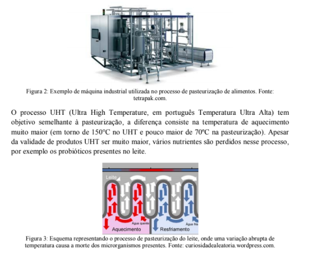
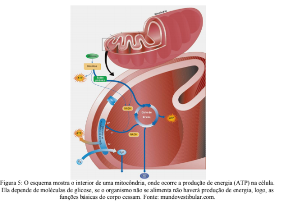
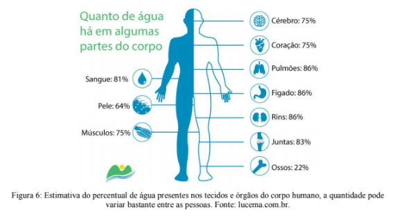
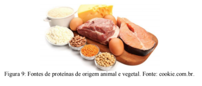
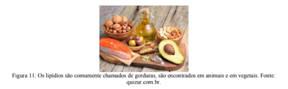
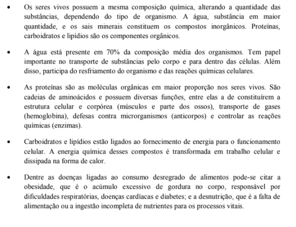

Capítulo 1
O METABOLISMO CELULAR MANTÉM A INDÚSTRIA ALIMENTÍCIA
QuestãoDizemos que a célula é a unidade funcional da vida, ou seja, se não houver atividade nas células a vida não é mantida. Para que elas realizem suas funções é necessário consumir energia, entretanto, você pode se perguntar: de onde vem essa energia? E qual a relação disso com o título do capítulo?
Contextualizando
Você já teve a sensação de ficar muito disposto a executar qualquer tarefa depois de se alimentar bem? Isso acontece porque toda a energia que nossas células usam para realizar tarefas (como contrair um músculo, respirar, ouvir, etc.) vem dos alimentos que ingerimos.
A quantidade de calorias de um alimento, que podemos descobrir nos rótulos de alimentos (figura 1), é justamente o quanto de energia que ele é capaz de prover para o nosso corpo. Sem alimento não há energia, sem energia as células param de funcionar, se as células não funcionam, a vida acaba.

Ao longo da evolução humana, encontrar energia sempre foi a principal preocupação e, por milhares de anos, a busca por alimento era a principal ocupação humana. Assim, uma adaptação essencial foi a capacidade de armazenar no corpo qualquer quantidade extra de energia que se pudesse achar, essa reserva é feita na forma de gordura. Com o desenvolvimento da agricultura e a domesticação de animais, a obtenção de alimentos se transformou em algo menos custoso.
Todo esse processo levou ao desenvolvimento da Indústria Alimentícia, que se ocupa da produção e distribuição de alimentos. Hoje temos alimentos com maior ou menor quantidade de gorduras, sódio, açúcares, conservantes, etc. O leite que até poucas décadas tinha validade curta, atualmente pode passar vários meses estocado em embalagens UHT.
VOCÊ SABIA?
A pasteurização é um processo de esterilização bastante utilizado pela Indústria Alimentícia (figura 2). Ele consiste em aquecer o produto (leite, cerveja, vinho, sucos, etc.) e rapidamente resfria-lo (figura 3), essa mudança rápida de temperatura (choque-térmico) causa a morte de vários microrganismos que poderiam causar problemas à saúde.
Apesar das inúmeras facilidades que nos apresentam, os alimentos industrializados podem conter substâncias tóxicas ao organismo, por isso é essencial conhecer as marcas comercializadas e ler os rótulos com atenção. Para além disso, a grande disponibilidade de alimentos apresenta às pessoas mais uma questão: qual a quantidade ideal de alimento devemos consumir para obter a energia necessária?
Para muitas pessoas a quantidade de energia ingerida é maior do que aquela gasta, isso implica no acúmulo de gordura. Lembre que nosso corpo se desenvolveu em um contexto em que energia era algo difícil de encontrar, por isso, nos tornamos muito eficientes em estocar energia. A abundância de comida é algo muito recente, o corpo humano não teve tempo de se adaptar a essa nova condição e continua estocando praticamente toda a energia excedente.
Mesmo que a indústria alimentícia forneça grande quantidade de alimentos, esses não estão disponíveis para todos, milhões de pessoas sofrem com a fome ao redor do mundo. A falta de alimentos tem consequências desastrosas no corpo humano, pois sem a energia retirada dos alimentos não há como manter o metabolismo celular.
(RE)CONSTRUINDO CONHECIMENTOSO metabolismo é o conjunto de reações químicas que ocorrem dentro das células, todos os tipos de células vivas apresentam metabolismo. Essas reações podem ser de quebra ou de síntese (construção) de moléculas.
A produção do tipo de energia que abastece o nosso corpo faz parte do metabolismo. Acima você leu que os alimentos são a matéria-prima para a produção de energia no nosso corpo e talvez tenha se perguntado: como um alimento é transformado em energia? Esse é um processo com várias etapas. A digestão "quebra" os alimentos em partes cada vez menores, os nutrientes complexos são transformados em nutrientes mais simples capazes de ser absorvidos pelas células. Cada tipo de alimento tem uma composição única e abastece nosso corpo com nutrientes importantes, deles conseguimos retirar carboidratos, gorduras, proteínas, água e sais minerais (figura 4).

Os componentes seguem caminhos diferentes no nosso corpo. Os carboidratos são "quebrados" até que as moléculas de glicose estejam separadas umas das outras, elas, por sua vez, são lançadas no sistema circulatório e encaminhadas a todas as células do corpo, onde serão convertidas em energia. Depois que a glicose entra na célula ela passa por várias transformações que envolvem o uso de água e oxigênio, ao longo dessa cadeia são liberadas moléculas de ATP (Adenosina Trifosfato) (figura 5), a forma de energia que os seres vivos utilizam.
VOCÊ JÁ PENSOU SOBRE ISSO?
Para onde vai o oxigênio que respiramos? Qual a função que ele exerce no nosso corpo?
O oxigênio (O2) é essencial para a produção de energia (ATP) nas células. Analise o esquema apresentado na figura 5, note a entrada de oxigênio na mitocôndria. O oxigênio que respiramos é transportado pelas células vermelhas do sangue (hemácias) desde os nossos pulmões através do sistema circulatório até todas as células do corpo. Ao entrar nas células ele é encaminhado diretamente para as mitocôndrias onde participará da produção de energia (ATP). Não é mera casualidade que o processo de produção de energia nas células seja conhecido como respiração celular!
Entretanto, há algo muito importante a considerar: o oxigênio, por ser um elemento muito reativo (reage quimicamente com muita facilidade), pode causar diversos tipos de danos às células.
Os seres vivos vivem constantemente esse dilema: o oxigênio é excelente na troca de energia porque reage facilmente e por reagir facilmente pode causar danos às células. Por conta disso, o oxigênio não é estocado em nosso corpo (ao contrário da glicose que pode ser estocada) e em poucos minutos a falta de respiração pode levar à morte.
E para onde vão os outros componentes dos alimentos? Eles podem ser encaminhados tanto para a formação de reservas (gordura no caso dos animais) quanto para construção das estruturas das próprias células.
COMPONENTES CELULARESÁGUA
A água é a substância presente em maior quantidade nos seres vivos, variando de espécie para espécie (figura 6). Ela atua na manutenção do equilíbrio osmótico, no transporte da maioria das moléculas, atua como regulador térmico e também participa das reações de enzimas. A falta de água no corpo dos seres vivos caracteriza o quadro clínico conhecido como desidratação, que pode levar o indivíduo à morte.
PROTEÍNAS
As proteínas são as substâncias orgânicas mais abundantes no organismo dos animais. São compostos formados por carbono, oxigênio, hidrogênio e nitrogênio, podendo, ainda, apresentar átomos de enxofre. Constituem moléculas grandes (macromoléculas) formadas pela união de moléculas menores chamadas aminoácidos (figura 7).

Existem 20 aminoácidos principais que foram as proteínas, mesmo assim, a quantidade de combinações possíveis entre eles é tão grande que é praticamente impossível calcular a diversidade de proteínas que podem ser formadas. Variações no número, na sequência e no tipo de aminoácidos envolvidos na formação da molécula resultam na produção de diferentes proteínas, que realizam distintas funções. As proteínas também atuam como compostos estruturais, compondo, juntamente com os fosfolipídios, as membranas celulares e o esqueleto interno da célula (citoesqueleto). Sob condições especiais, servem como fonte de energia.
A queratina do cabelo, pelos e unhas; a hemoglobina dos glóbulos vermelhos, capaz de distribuir oxigênio para todas as células corpóreas (figura 8); a actina e a miosina da musculatura; a caseína do leite; o glúten do trigo; as enzimas, os hormônios e os anticorpos são proteínas.

Quando pensamos em fontes alimentares de proteínas geralmente lembramos das carnes, mas diversos vegetais também são alimentos ricos nesses compostos (figura 9).
CARBOIDRATOS
Também conhecidos como açúcares, os carboidratos apresentam sua estrutura química formada por carbono, oxigênio e hidrogênio. Como você leu acima, são a principal fonte energética para as células. Alguns tipos de carboidratos apresentam função estrutural (como a celulose vegetal) e outros entram na constituição de ácidos nucleicos (DNA e RNA). O açúcar de mesa, as farinhas, as batatas, o arroz e as fibras vegetais são essencialmente constituídas por carboidratos (figura 10).

LIPÍDIOS
Os lipídios são popularmente chamados de gorduras, mas compreendem também os óleos, ceras e colesterol (figura 11). São compostos orgânicos formados por carbono, hidrogênio e oxigênio, obtidos a partir da combinação de ácidos graxos com alcoóis. Caracterizam-se pela insolubilidade em água (ou seja, os lipídios não se mistura na água). Possuem funções energéticas, hormonais e de construção.
SAIS MINERAIS
Os sais minerais são substâncias inorgânicas (ou seja, não são produzidos por serres vivos) essenciais para mantermos nossa saúde. Para obtermos sais minerais em quantidade adequada é necessário manter uma alimentação diversificada e saudável, pois os sais minerais ocorrem em pequenas quantidades nos itens que utilizamos na alimentação (figura 12).

Pelo que você já leu até agora deve ter notado o quanto uma alimentação balanceada é condição para o funcionamento adequado do corpo. Muitas doenças têm como causa a má alimentação e várias outras restringem os tipos de alimentos que podem ser consumidos.
A intolerância à lactose tem afetado cada vez mais pessoas. Nessa condição há a dificuldade ou incapacidade de digerir o carboidrato do leite (lactose), que ao se acumular é transformado em um composto tóxico pelas bactérias que habitam naturalmente nosso intestino, isso gera uma série de sintomas que provocam dores e desconforto. Vários fatores podem levar a essa condição (figura 13), um dos principais deles é o fato de os mamíferos naturalmente reduzem a produção de lactase (proteína responsável pela digestão da lactose) conforme ficam mais velhos.

UMA PAUSA PARA PENSAR
A OBESIDADE É UM PROBLEMA? Mais de 20% da população brasileira é obesa e mais de 50% está acima do peso, números que crescem de forma acelerada. A obesidade é caracterizada pelo acúmulo excessivo de gordura corporal. Para determinar o peso adequado de um indivíduo, um dos parâmetros mais utilizados é o Índice de Massa Corporal (IMC), que é calculado pela relação entre o peso e a altura de uma pessoa. O resultado desse cálculo é comparado a valores de referência adotados pela Organização Mundial da Saúde (OMS). A causa da obesidade varia, na esmagadora maioria dos casos o excesso de peso se deve à dieta pouco balanceada com consumo exagerado de alimentos muito calóricos, há também, em alguns casos, alguma influência genética sobre o acúmulo de gordura ou mesmo desequilíbrios hormonais. Devido ao aumento significativo de pessoas acima do peso, a obesidade é considerada um dos principais problemas de saúde pública, já que pode desencadear muitos problemas de saúde e, inclusive, levar à morte (figura 14).

AÇÃO E REFLEXÃO
Leia o texto abaixo:
Antes de tudo é importante entender a diferença entre perder peso e emagrecer, pois nem sempre perder peso significa realmente emagrecer. Emagrecer é quando conseguimos reduzir o percentual e a quantidade de gordura no nosso organismo. Mas, quando os ponteiros da balança caem, 3 coisas podem estar acontecendo: ou você está perdendo gordura, ou perdendo músculos ou ainda, perdendo apenas líquidos.
O ideal é que, ao fazer dieta, possamos perder vários quilos de gordura, poupando a massa muscular para então melhorar o metabolismo. Para isso, o correto é, além de corrigir a alimentação, também praticar exercícios físicos para estimular os músculos.
No entanto, quando uma pessoa faz uma dieta restrita e deixa de comer muitos nutrientes essenciais, o corpo passa a usar a massa muscular como fonte de energia. Além disso, em muitas dietas, as pessoas não consomem de forma adequada vitaminas e sais minerais que são essenciais ao equilíbrio do nosso organismo. A falta desses minerais, como sódio, potássio, cálcio e magnésio pode muitas vezes levar a problemas nos intestinos como cólicas intestinais, vômitos, diarreia e até arritmias cardíacas graves. Outras dietas em que as pessoas consomem grande quantidade de proteína sem o consumo adequado de água podem ocasionar desde a sobrecarga nos rins até mesmo convulsões em casos muito extremos. (...)
Um alerta importante sobre dietas radicais. Sociedade Brasileira de Diabetes. https://www.diabetes.org.br/publico/diabetes-em-debate/1479-um-alerta-importante-sobre-dietas-radicais Acesso em 03/02/2020
Talvez você ou alguém próximo já tenha tentado diminuir o peso através de dietas radicais. Sabendo que qualquer tipo de dieta afeta o metabolismo celular e depois de ter lido o texto acima pense em alguns argumentos que podem proteger pessoas que são radicais em sua alimentação (tanto restringindo quanto excedendo demais os valores ideais).
O QUE APRENDI
